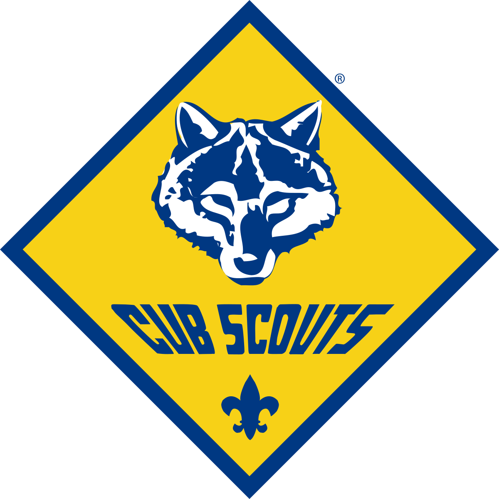
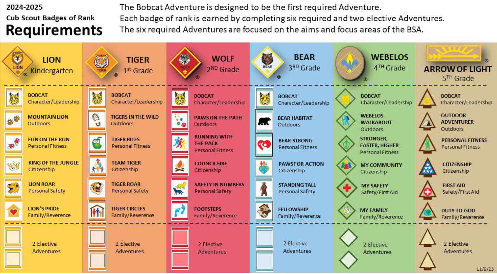

Denver, CO

Cub Scouts is a family-based program in which our Scouts have fun, learn skills, make friends, and build their character, as part of Scouting America (formerly Boy Scouts of America).
We are a large and active pack serving families with kids (of all genders) in the general East Denver area. Cub Scouts spans from Kinder thru 5th grade. Our pack welcomes all age-eligible youth -- no matter their gender, culture, ethnicity, socioeconomic status, religion, ability, family background, or family structure -- who'll "do their best" to follow the Scout Oath and Law. You can learn more about Cub Scouts through the official Aims & Methods, and Family Information Guide. You can also read about our Pack's inclusion policy in response to national press coverage of Scouting America here.
Contact us at pack34denver@gmail.com.
During the school year, Pack 34 meets at the Bill Roberts Elementary School cafeteria/field at 6:15pm on Monday evenings. The pack meets as large group approximately once a month, and as smaller dens most weeks. Additionally, the pack organizes campouts, service projects, hikes, Pinewood Derby races, and other activities throughout the year.
Pack 34 is organized into dens, which are smaller groups of kids organized by grade. Youth can join Cub Scouting at any age.
On the advancement trail, a Cub Scout progresses towards a badge of rank based on their grade, by doing a set of programmed activities, called "adventures".

See adventures.
See adventures.
See adventures.
See adventures.
See adventures.
See adventures.
Our pack has a scholarship policy and our goal is that any family can participate regardless of their financial situation. Reach out to us to know more about this.
Pack dues are $130 ($117 if you already have a neckerchief) / program year (Aug - July), and national Scouting America dues are $85/year.
Pack t-shirt (class B uniform), neckerchiefs, and slides are included with Pack 34 membership dues.
Our pack suggests also obtaining a class A shirt, but other components are optional (hat, belt, pants, socks). See the Official uniform descriptions.
Uniforms can be acquired at:
The required patches are the World Crest patch, Denver Area Council patch, "3" and "4" numerals in red and white. The Scout Shop can sew the patches for you on-site and they also sell shirts with some patches pre-sewn. Another alternative is to use Badge Magic to glue them on.
Den-specific handbooks are optional, and can be either:
An adult, usually a parent, serves as a Den Leader. They carry out the activities related to adventures as they are presented in the Cub Scout's handbook and the Den Leader Guide.
A Den Chief is a Scout, Venturer or Sea Scout assisting a Cub Scout den.
The leader of the pack meeting is the Cubmaster. In addition to serving as the master of ceremonies the Cubmaster provides support to Den Leaders.
Made up of parents, leaders, and other caring adults the pack committee works to support den leaders and the cubmaster.
The top volunteer in the pack is the Pack Committee Chair. They are responsible for ensuring enough qualified adult volunteers are in place to provide the program. They lead the pack committee meetings.
This is the organization that partners with the Boy Scouts of America to deliver a Scouting program. They adopt Scouting to serve the youth in the community.
This person appoints the Pack Committee Chair and approves all adult leaders. They provide resources from the chartered organization.
Dear Pack 34 Families and Prospective Families,
Recently, there have been a number of press articles published discussing an agreement that was reached between the national Scouting organization, Scouting America, and the US Department of Defense (DoD). Some parts of the agreement reflect the long-standing positive relationship between Scouting and the military. Other parts of the agreement raise concerns, but have little to no direct impact on us at the Cub Scout level. However, communications from Scouting America around parts of the agreement that pertain to the status of transgender, nonbinary, intersex and other LGBTQIA+ members have been, in our opinion, ambiguous and harmful.
We have asked and will continue to ask for clear statements of policy from Scouting America. Regardless of their response, we want to share our Pack's beliefs and policies. Our pack operates under the principle that Scouting should be a space where every child is welcomed and supported. We believe in:
Our chartering organization, Montview Boulevard Presbyterian Church, shares these values and has expressed their support for our policy positions.
We recognize that you may have questions about these policies or other aspects of the agreement between Scouting America and DoD. If so, please reach out to any member of the Pack Committee listed for further discussion.
Pack 34 will continue to provide a safe, affirming environment for all individuals, including those who identify as LGBTQIA+. We stand with the thousands of Scouters nationwide who demand that Scouting remain open to all, without exception. To that end, we plan to send a letter from the Pack to Scouting America expressing our concerns and informing them of our policies. We invite you to review the letter and, if you feel so inclined, add your name to it. Additionally, if you wish to express personal feedback regarding these announcements, we have included some contacts below for your reference:
Sincerely,
The Pack 34 Committee
Have more questions? Contact us at pack34denver@gmail.com.